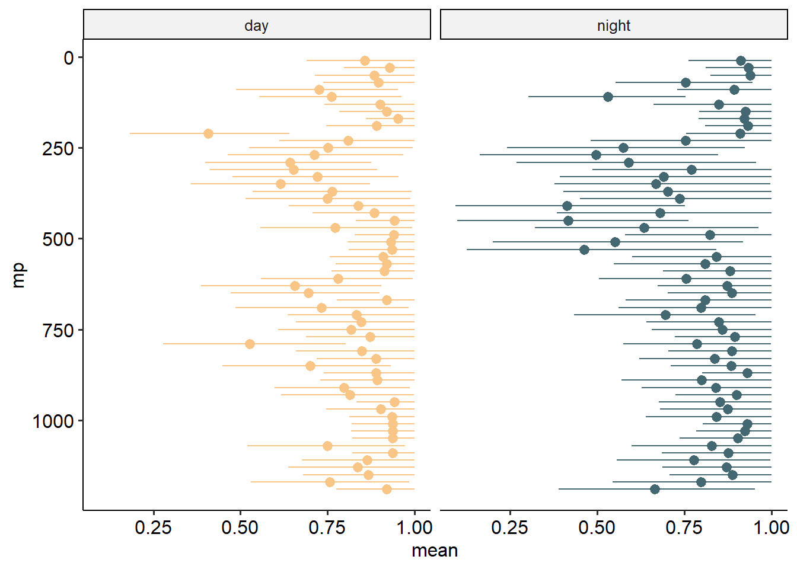

Code
rm(list = ls())
library(wiqid)
library(ggpubr)
library(ggplot2)
library(EcotaxaTools)
source('../R/tools.R')
full_col_mod_epi <- readRDS('../data/04_full-col-model-euphotic.rds')
full_col_mod_tmeso <- readRDS('../data/04_full-col-model-top-meso.rds')
full_col_mod_bmeso <- readRDS('../data/04_full-col-model-bot-meso.rds')
count_data <- readRDS('../data/04_count_data.rds')
###
# Occurrence Probability #####
###
# |- Model Extraction ------------------
psi_extract <- function(model, tod, min_d, max_d) {
db_length <- ncol(model[[tod]]$sims.list$psi)
out_df <- data.frame(
db = db_decode(c(1:db_length), tod, min_d, max_d, db = model$db),
mean = rep(NA, db_length),
low = rep(NA, db_length),
high = rep(NA, db_length)
)
for(i in 1:db_length) {
out_df[i,-1] <- c(mean(model[[tod]]$sims.list$psi[,i]),
hdi(model[[tod]]$sims.list$psi[,i]))
}
return(out_df)
}
day_psi <- do.call(rbind, list(
psi_extract(full_col_mod_epi, 'day', 0, 200),
psi_extract(full_col_mod_tmeso, 'day', 200, 600),
psi_extract(full_col_mod_bmeso, 'day', 600, 1200)
)) |>
bin_format()
night_psi <- do.call(rbind, list(
psi_extract(full_col_mod_epi, 'night', 0, 200),
psi_extract(full_col_mod_tmeso, 'night', 200, 600),
psi_extract(full_col_mod_bmeso, 'night', 600, 1200)
)) |>
bin_format()
day_psi$tod <- 'day'
night_psi$tod <- 'night'
psi_df <- rbind(day_psi, night_psi)
# |- Occurrence plot ---------------------
ggplot(psi_df) +
geom_pointrange(aes(y = mp,
x = mean,
xmin = low,
xmax = high,
color = tod)) +
facet_grid(~tod) +
scale_y_reverse() +
scale_color_manual(values = c(dn_cols['day'],dn_cols['night'])) +
theme_pubr() +
theme(legend.position = 'none')